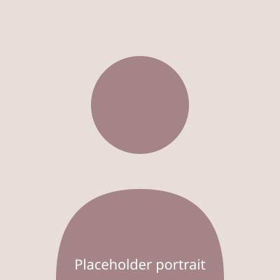

A marine biologist and educator whose fictional career is used here as sample biography content. Her story traces a path from a small coastal town to founding a nonprofit dedicated to restoring shoreline ecosystems and training the next generation of field scientists.
- Born in a small coastal fishing town
- Goes to college and graduates with a degree in Biology
- Teaches high-school science while volunteering on weekend shoreline surveys
- Joins a state environmental agency, working on coastal water-quality programs
- Leaves a secure job to spend a year doing field research abroad
- Completes a Masters in Marine Ecology, focusing on estuary restoration
- Publishes a widely cited study on community-led conservation programs
- Founds the Tidewater Conservation Alliance, a nonprofit restoring shoreline habitats
- Grows the Alliance to several staff members and a yearly student fellowship program
- Continues expanding the program to new coastal communities each year
If you would like to learn more about her work you can visit the Alliance's site, example.com.